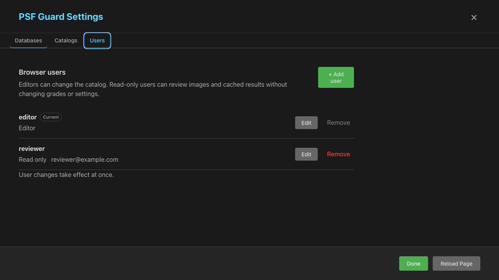
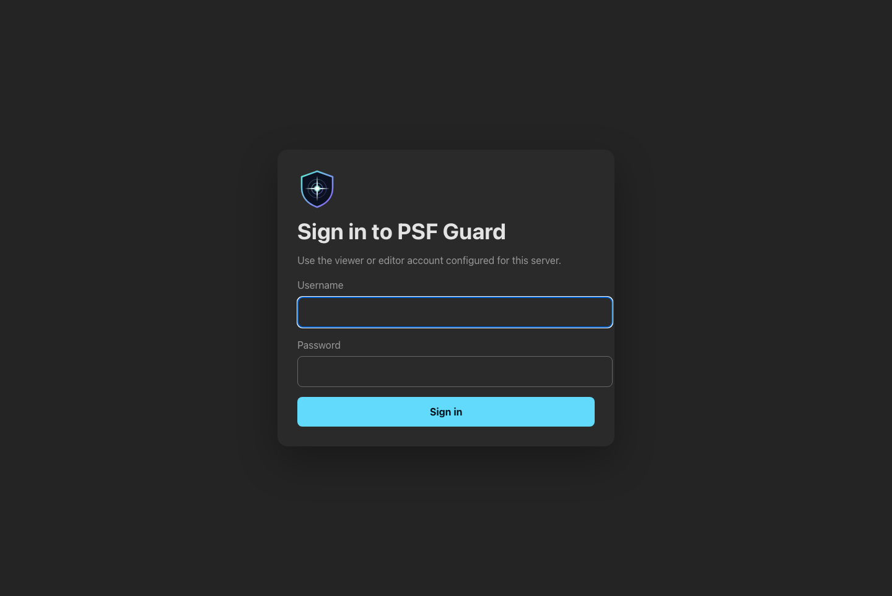

Server Accounts
Run PSF Guard as a web server and it can ask who is calling. Authentication is off by default, and the desktop app never uses it — but the moment a server listens past your own machine, it stops handing out the catalog to anyone who finds the port.
The bind address decides
Reaching a loopback server already means reaching the machine, so nothing changes there. Any other address is a different question, and a server with no accounts on one now answers every API request with 401 — reads included.
| Bind address | With no accounts configured |
|---|---|
127.0.0.1, ::1, localhost | Full access. This is the desktop app and local development. |
Anything else, including the 0.0.0.0 default | Every API request answers 401 until an account exists. |
--allow-database-management goes further: on a network address
the server refuses to start until an account exists, because those routes name
filesystem paths the server then reads and writes. Once one does, only an
editor may use them.
psf-guard users add editor
--role read-write is the short path;
--allow-anonymous-access is the escape hatch below.
Keeping a network server open on purpose
--allow-anonymous-access gives every caller on a network
address what a localhost server gives them — no accounts, no login — and logs
what it is handing out.
psf-guard server --host 0.0.0.0 --allow-anonymous-accessIt is meant for a network you trust as much as the machine itself, and for
upgrading a deployment without an outage. It grants full editor access —
grading, imports, and with --allow-database-management the
registry itself — to anyone who can reach the port. Treat it as temporary: add
accounts, then drop the flag.
Editors and read-only users
A read-only user can read catalogs, images, quality results, exports, and
cached analysis. By default they cannot start the expensive work —
stack builds, plate solves, satellite predictions, view processing — though
every cached result stays available to them. Set
allow_read_only_compute = true to let them start those jobs too;
that suits a trusted private server and not a public demo, where repeated jobs
eat CPU, bandwidth, and cache.
An editor can also grade with undo and redo, edit projects, targets, coordinates, and exposure plans, start scans and imports, write exports, apply sync previews, and — when the matching server gate is on — manage databases, peers, catalogs, and calibration records.
The server enforces the role itself, so a client calling the API directly gains nothing. The UI marks a read-only session Read only, hides Settings, and disables the grading controls.
Managing users
An editor signed in to a web server gets a Users tab in Settings: add an account, record an optional email, change a role or password, remove someone. Changes take effect at once. Changing access or a password signs out that account's existing sessions; changing only an email does not. The UI will not remove the account you are signed in with, nor leave the server without an editor.

The CLI does the same job on a headless box, and prompts twice without echoing when no password file is given:
psf-guard users add viewer --role read-only --email viewer@example.com
psf-guard users add editor --role read-write --password-file /run/secrets/editor
psf-guard users list
psf-guard users remove viewerPasswords are stored as salted Argon2 hashes in auth.json
beside the database registry, mode 0600 on Unix; the password
itself never is. Use --replace to change a role or password.
Restart the server after a CLI change — active sessions stay valid until you
do.
Signing in
Once auth.json holds a user, the browser gets a login page. A
successful login sets an HttpOnly, SameSite=Strict session cookie. Sessions
live in server memory, expire after session_hours, and end when
the server restarts.

[server.auth]
session_hours = 168
secure_cookie = true
allow_read_only_compute = falseSecure cookies are the default. Only set secure_cookie = false
for a direct HTTP development server — a browser will not send a Secure cookie
over plain HTTP.
What keeps working without a login
Remote image upload and scheduler sync carry their own
Authorization: Bearer keys, scoped to the database they were
issued for. Those routes keep working on a server with no browser accounts at
all, which is how a headless intake box runs while a person grades elsewhere.
Scripts that drive the ordinary UI API log in with a cookie jar instead:
curl -c psf-guard.cookies -H "Content-Type: application/json" \
-d '{"username":"editor","password":"..."}' \
https://guard.example/api/auth/login
curl -b psf-guard.cookies https://guard.example/api/databasesDeployment notes
- Put a public server behind HTTPS. Login passwords otherwise cross the network in clear text.
- Seed an account from an existing secret with
--password-file; only the hash is written. - Keep
--allow-database-managementoff unless you need browser-side database management. An editor login does not override that gate, and the gate does not override the login — on a network address a server needs both. - Signing out revokes that session. Restarting the server revokes every browser session.
--registry, lives in
docs/AUTHENTICATION.md
in the main repository.